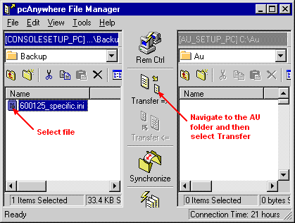
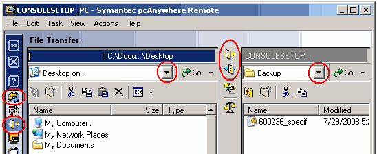

Select the
File Transfer icon at the top of the
pcAnywhere window to launch the File Manager application.
Navigate to the folder containing the target file on your local PC or the remote PC, and then select the target file (example C:\ NexGen\ Console\ Backup\ 600125...).
Note: The PC that you are calling from is on the left side of the display. The remote system is on the right side of the display.
Figure 387: Transferring specific.ini from console PC to C:\AU folder

Navigate to and select the location to copy the file to.
Note: Files can be transferred from your PC to the remote system, or from the remote system to your PC.
Select the
Transfer icon in the center of the window.
When the transfer is complete, close the
File Manager window.
Transfer files using pcAnywhere V11.
Select the
File Transfer icon at the left side of the
pcAnywhere window.

Navigate to the folder containing the target file on your local PC or the remote PC, and then select the target file (example C:\ NexGen\ Console\ Backup\ 600125...).
Note: The PC that you are calling from is on the left side of the display. The remote system is on the right side of the display.
Navigate to and select the location to copy the file to.
Note: Files can be transferred from your PC to the remote system, or from the remote system to your PC.
Select the
Transfer icon in the center of the window.
When the transfer is complete, select
Remote Control from the menu at the top left corner of the
pcAnywhere
window.